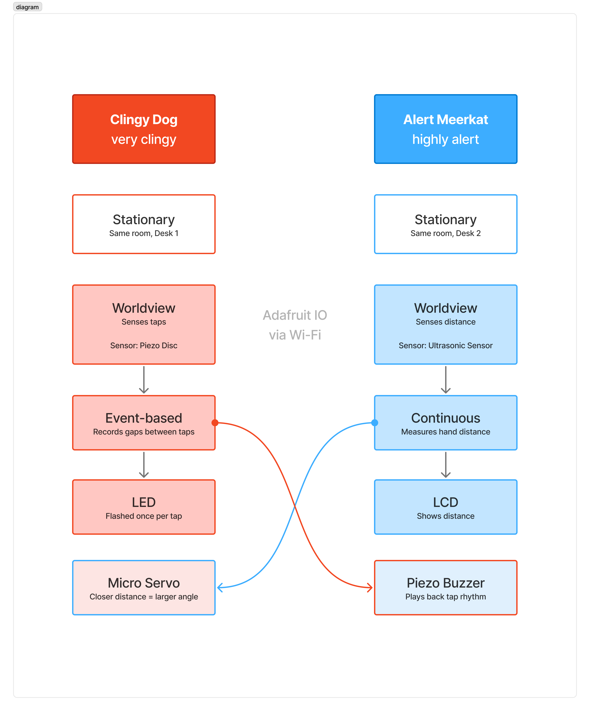

About:
Create two electronic pets: a "Clingy Dog" and an "Alert Meerkat." The Clingy Dog wags its tail when petted, while the Alert Meerkat lets out a call to act as a sentry whenever something approaches.

Clingy Dog
HOW IT WORKS: When tapped Piezo Disc, the LED lights up. Each time you tap it, the LED flashes once.
WORLDVIEW: very clingy，senses taps
SENSOR: Piezo Disc
INPUT: tap rhythm
OUTPUT: LED flashes
OUTPUT/COMMUNICATION DEVICE: Micro Servo
Alert Meerkat
HOW IT WORKS: When a hand comes close, the LCD shows the distance. When nothing is within range, it shows “---”.
WORLDVIEW: highly alert，senses distance
SENSOR: Ultrasonic Sensor
INPUT: distance
OUTPUT: LCD display
OUTPUT/COMMUNICATION DEVICE: Piezo Buzzer
How they communicate：
Clingy Dog → Alert Meerkat
Dog’s tap rhythm is sent to Meerkat.
Meerkat’s Piezo Buzzer responds to Dog’s tap rhythm.
Alert Meerkat → Clingy Dog
Meerkat’s distance is sent to Dog.
Dog’s Micro Servo responds only to Meerkat’s distance data.